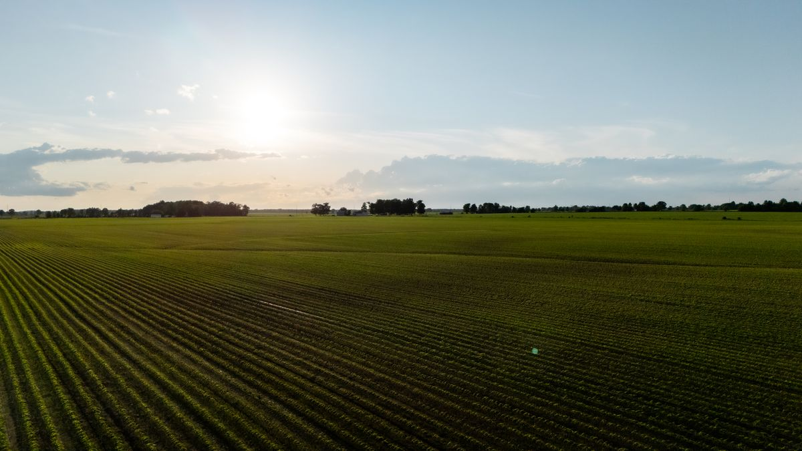
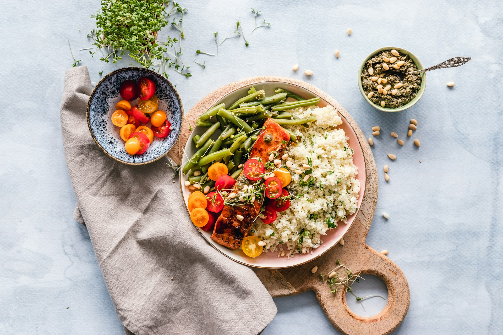
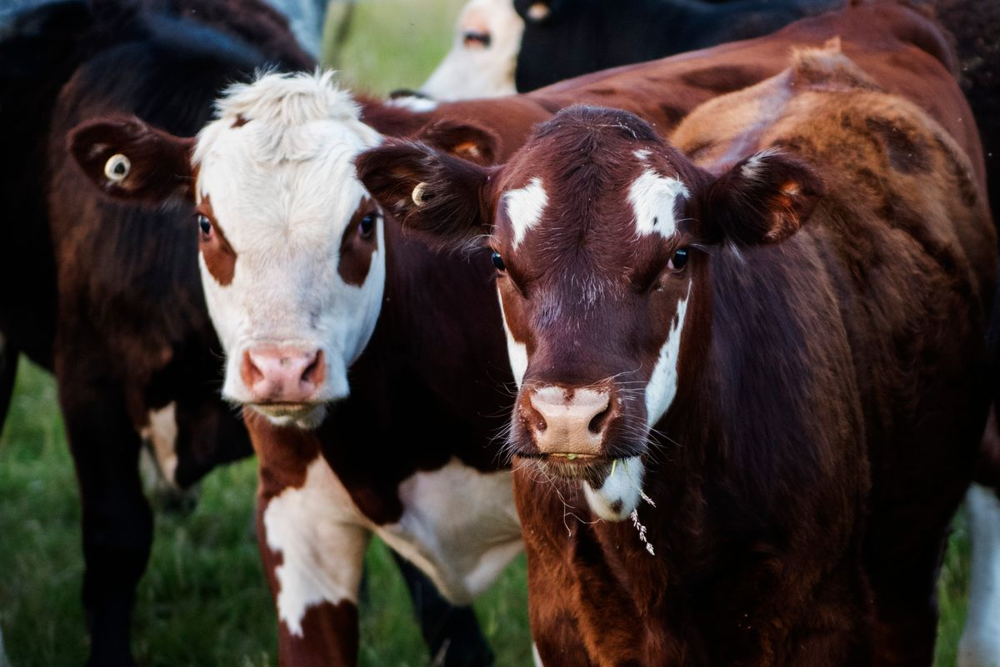
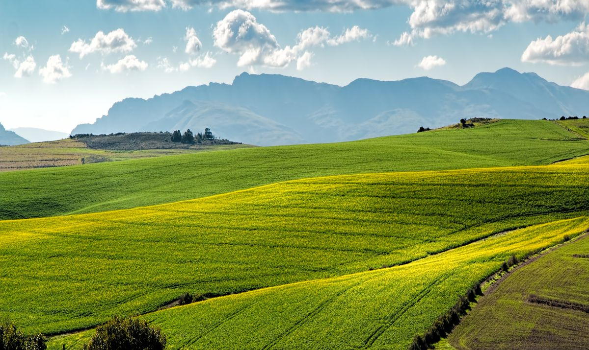
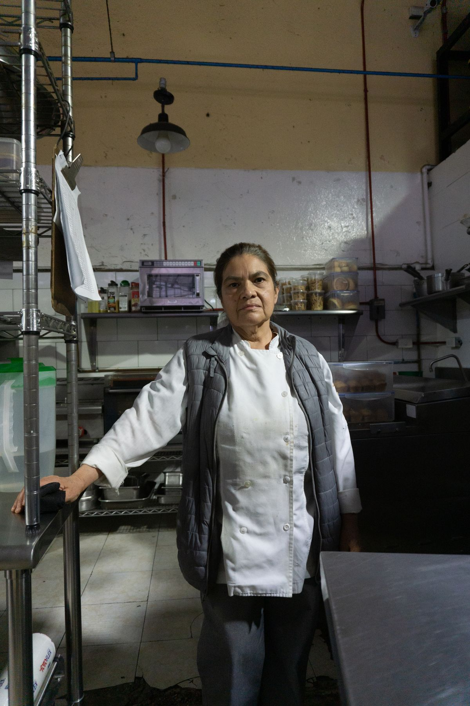

8 miles awayGrown with care
Sunnyside Organic Farm
Heirloom tomatoes, leafy greens, herbs

Good food. Good soil. Good company.
From Our Farms to Your Fork
A celebration of the season.
A little closer to the land.
A place at nature's table
Every dish at Harvest & Hearth begins with a conversation — with the soil, the season, and the farmers who nurture our ingredients. We source 90% of our produce from farms within 30 miles, ensuring peak freshness and supporting our local food community. Our chefs craft each plate to honor the ingredient first, letting nature lead the way.
A fictional restaurant concept. All sourcing figures, awards and reviews are illustrative.
Our closest relationships
We're proud to work with these
local growers and producers.

8 miles awayGrown with care
Heirloom tomatoes, leafy greens, herbs

22 miles awayA little everyday richness
Artisan cheeses, fresh butter, crème fraîche

15 miles awayRoom to roam
Grass-fed beef, heritage pork, free-range eggs
Imagined local partnerships. Photography illustrates the landscape, not these fictional farms.

The heart of our kitchen
With 15 years of experience in kitchens from Lyon to Portland, Chef Elara brings a deep respect for seasonal cooking and traditional techniques. She joined Harvest & Hearth in 2022 with a mission: let the ingredients speak for themselves. Her menus change weekly based on what arrives from the farms — no two visits are ever quite the same.
“I don't write menus.
The farms write them for me.”
Fictional chef and credentials, supplied for this design concept.
Little moments, well spent
On the plate. Around the table.
In the moments between.
Selected mood photography · Tap to take a closer look
Pull up a chair, under the stars
Join us for monthly farm dinners at our partner farms. A 5-course meal served under the stars, featuring ingredients harvested that afternoon.
April 18, 2026 · Sunnyside Farm
$125 per person, wine pairing included
For the people who matter
Host your next celebration in our private dining room, seating up to 24 guests.
Kind words from our table
Fictional review excerpts from the original restaurant concept.
Something good is waiting
A quiet dinner for two. A long-overdue gathering.
We'd love to make a little room for you.
Local booking preview only; no reservation, payment or message is sent.
Schematic illustration · Fictional location
Find your way to our table
(555) 482-7700
hello@harvestandhearth.com
Free lot behind the building, street parking available